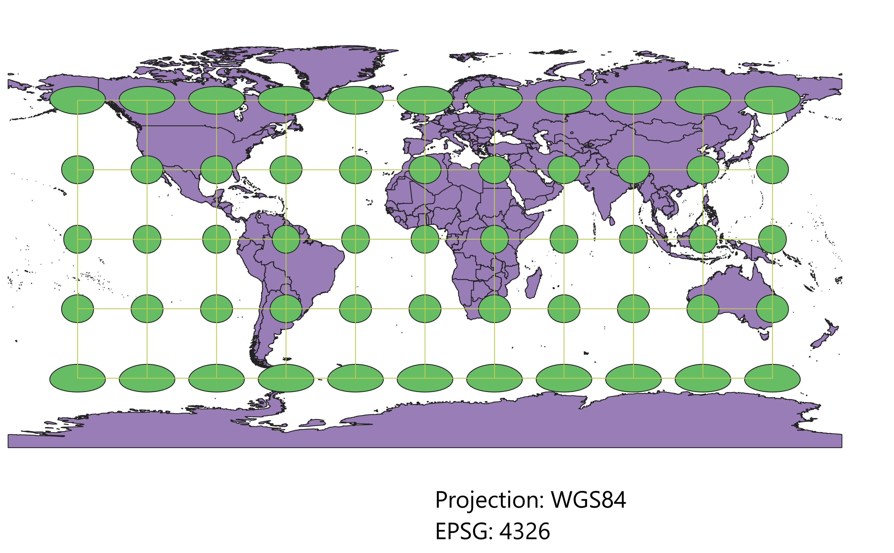
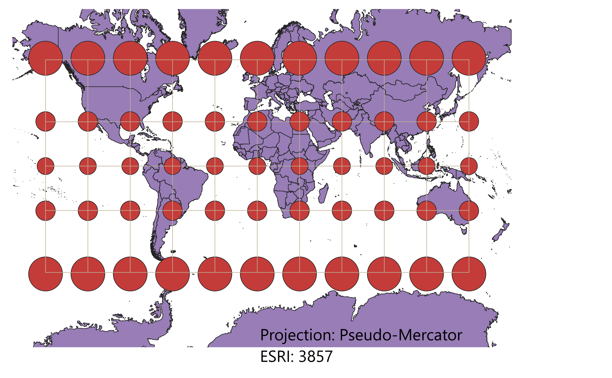
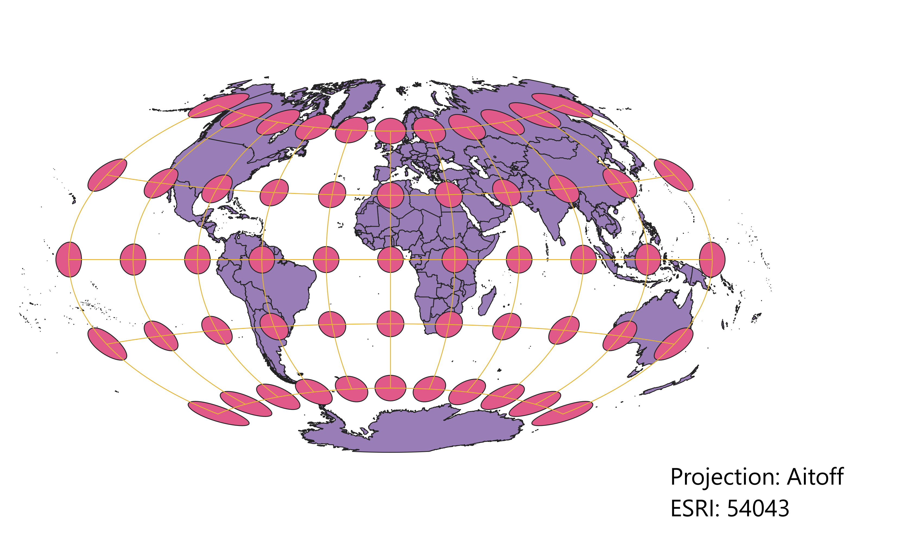
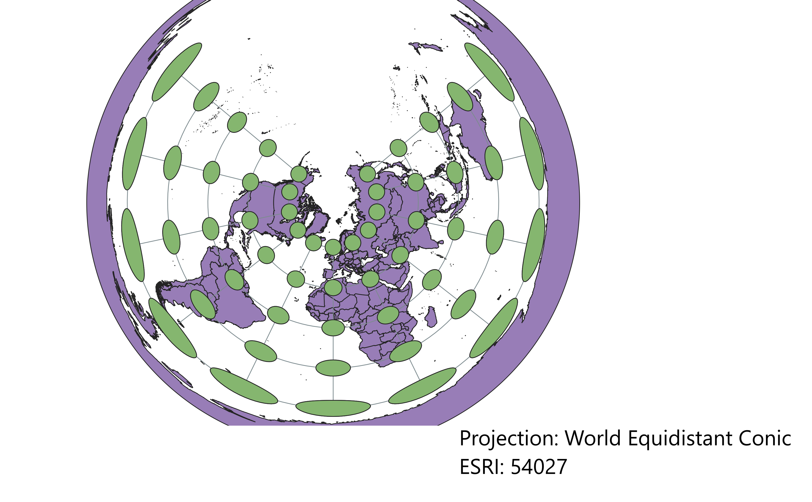

Geog 370 - Homework 3: Map Projections. September 7, 2022
Projection #1: WGS 84

The WGS84 Projection is the starting point in QGIS and the shape of the countries retain recognizability.
Projection #2: Pseudo-Mercator

The Mercator Projection is special in that it retains direction, which is useful for navigators. ALthough the Mercator may not always direct the travelor to a route in the shortest distance, it may be used to accurately measure direction.
Projection #3: Aitoff

The Aitoff is a modified azimuthal projection of the world that optimizes presentation.
Projection #4: Sphere-Winkel 1

This projection is pseudocylindrical and used to present with only moderate distortion in most areas.
Projection #5: World Equal Area
 This cylindrical map is a good thematic map often used for presentation.
This cylindrical map is a good thematic map often used for presentation.
Projection #6: World Equidistant Conic

This projection does well because distance is close to equal in each direction.
Projection #7: North Pole Azimuthal Equidistant
 This projection also is equidistant and optimizes topographic features, navigation, and national agencies.
This projection also is equidistant and optimizes topographic features, navigation, and national agencies.
Projection #8: World Eckert VI

This projection is pseudocylindrical and is a very good thematic map
Projection #9:Sphere Loximuthal

The Sphere Loximuthal Projection is good for navigation.
Projection #10: World Plate Carree

This cylindrical projection is one of the weaker projections for balancing preservation of distance, direction, shape, and area. However, it still remains recognizable.